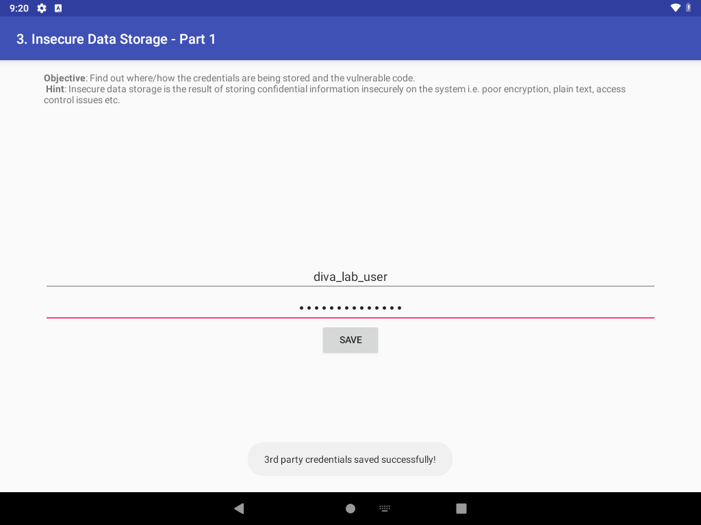
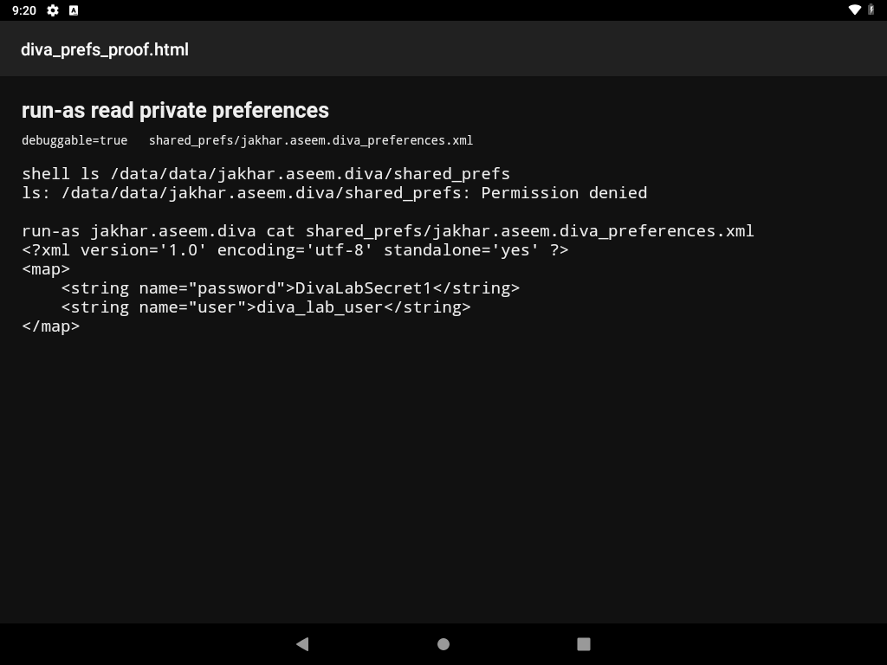

Description
The application tag sets android:debuggable="true". On a device with ADB, that flag lets the shell user enter the app's private directory with run-as jakhar.aseem.diva. The same directory is denied to the shell user without run-as.
InsecureDataStorage1Activity.saveCredentials() writes the third-party username and password with PreferenceManager.getDefaultSharedPreferences():
spedit.putString("user", usr.getText().toString());
spedit.putString("password", pwd.getText().toString());
spedit.commit();There is no encryption. The default file name is jakhar.aseem.diva_preferences.xml. The activity that shows this form is not exported, so the credentials were entered through the app UI, then read back from outside the app with run-as. Root was not used.
Steps performed
- Confirmed
android:debuggable="true"in the manifest and readsaveCredentials()inInsecureDataStorage1Activity.java. - Confirmed a plain shell cannot list the preferences directory:
adb shell ls /data/data/jakhar.aseem.diva/shared_prefs # ls: /data/data/jakhar.aseem.diva/shared_prefs: Permission denied - Launched
MainActivityand tapped 3. INSECURE DATA STORAGE - PART 1. - Entered
diva_lab_user/DivaLabSecret1and tapped SAVE. The screen showed "3rd party credentials saved successfully!". - Read the private file as the app user:
adb shell run-as jakhar.aseem.diva cat shared_prefs/jakhar.aseem.diva_preferences.xml - Opened that output in the device HTML viewer and took a screenshot.
The same steps are automated_exploitations_diva/02_debuggable_private_storage.py.
Evidence
Form after SAVE, with the username still on screen and the success toast visible:

diva_lab_user on the form, password masked, toast confirming the save.Extracted preferences
Saved copy: automated_exploitations_diva/evidence/02_preferences.xml
| key | value |
|---|---|
| user | diva_lab_user |
| password | DivaLabSecret1 |
<?xml version='1.0' encoding='utf-8' standalone='yes' ?>
<map>
<string name="password">DivaLabSecret1</string>
<string name="user">diva_lab_user</string>
</map>
ls is permission denied. run-as prints the same username and password.Impact
Anyone with ADB access to the device, and no root, can read credentials the user saved in this screen. The shell user is denied the same path, so the result depends on debuggable, not on the lab image being rooted. The password is the same string the user typed.
Errors
What failed. Starting the storage screen directly was denied.
adb shell am start -n jakhar.aseem.diva/.InsecureDataStorage1Activity
Security exception: Permission Denial: starting Intent
{ flg=0x10000000 cmp=jakhar.aseem.diva/.InsecureDataStorage1Activity }
from null (pid=8449, uid=2000) not exported from uid 10078InsecureDataStorage1Activity has no intent-filter and no android:exported="true". On API 28 the shell user cannot start it.
Fix. Open the exported launcher and tap the button the app itself uses. MainActivity.startChallenge() starts InsecureDataStorage1Activity when the view is d3button, whose label is 3. INSECURE DATA STORAGE - PART 1. The script finds that label with uiautomator and taps it. It does not hard-code screen coordinates.
No other command failed. run-as succeeded on the first try. Frida was not required.